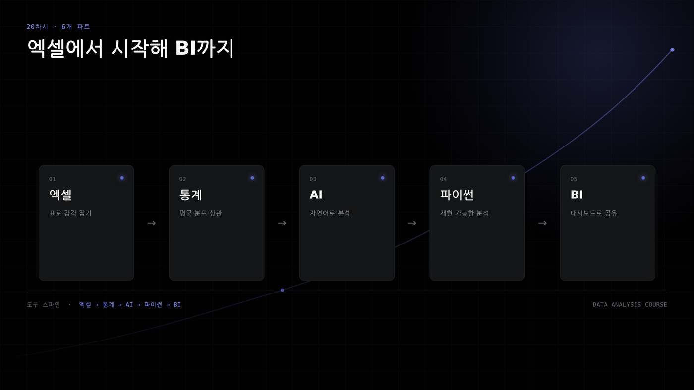

S19 · PART 06 · 캡스톤 · 난이도 5
AI 요약·그래프·BI
검증된 집계표로 설명, 그래프, 대시보드까지 만든다.
오늘 마치면 할 수 있는 일
- 원자료를 질문에 맞는 집계표로 줄인다.
- 검증된 숫자로 AI 요약을 작성한다.
- 같은 CSV로 그래프와 BI를 만든다.
- 점포 수와 매출 해석을 구분한다.
한 장으로 보는 전체 흐름

질문이 집계, 설명, 공유로 이어진다.
원자료를 집계표로 줄인다
원자료
행수119,158행
열수13열
단위상가 1행
→
BI 입력 CSV
행수349행
열수5열
단위구×업종 집계
결과119,158행을 349행 집계표로 줄여 BI 입력을 만든다.
강남구의 점포 수가 가장 많다
결과강남구는 마포구보다 4,699개 많다.
카페 비율은 구마다 다르다
결과상위 구에서도 카페 비율은 15.6~20.8%로 다르다.
한식 점포 수가 압도적으로 많다
결과한식은 40,448개로 커피점/카페의 약 2.1배다.
결측은 목적 컬럼 기준으로 본다
| 항목 | 확인값 | 판단 |
|---|---|---|
| 상가업소번호 | 중복 0건 | 식별 가능 |
| 시군구명 | 결측 0건 | 구 집계 가능 |
| 행정동명 | 결측 312건 | 동 분석 주의 |
| 지점명 | 결측 87,355건 | 오늘 미사용 |
| 상호명 | 결측 1건 | 보완 가능 |
지점명 결측만으로 행을 버리지 않는다.
핵심 개념 1
AI는 설명 초안 도구다
AI에는 원자료가 아니라 파이썬이 만든 집계 텍스트만 넣는다. 계산은 코드가 맡고, AI는 설명 초안을 쓴다.
- 없는 숫자를 만들면 삭제한다.
- 마지막 문장에 한계를 적는다.
BI는 필터 가능한 요약이다
| 영역 | 설정 |
|---|---|
| 카드 | 점포수 합계 |
| 카드 | 시군구 고유 개수 |
| 막대 | 시군구별 점포수 |
| 누적 막대 | 구×업종 점포수 |
| 필터 | 업종 중분류 |
측정항목은 평균이 아니라 합계다.
오늘의 미션
미션 1. AI 요약
집계 결과만 근거로 5문장 이내로 작성한다.
미션 2. 파이썬 그래프
상위 10개 구 PNG를 제출한다.
미션 3. BI 1페이지
필터 가능한 대시보드를 만든다.
미션 4. 해석과 한계
점포 수와 매출 판단을 구분한다.
정리
- 원자료 119,158행은 집계하면 349행이 된다.
- 강남구가 12,095개로 점포 수 1위다.
- 점포 수만으로 매출이나 성공 가능성을 말하지 않는다.
다음 차시: 인사이트 보고, 그래서 무엇을 할 것인가